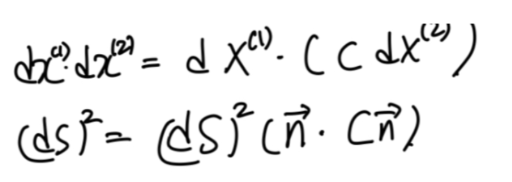
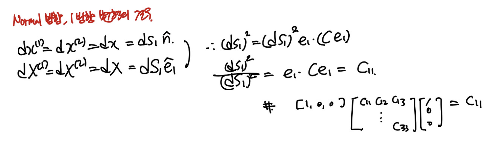
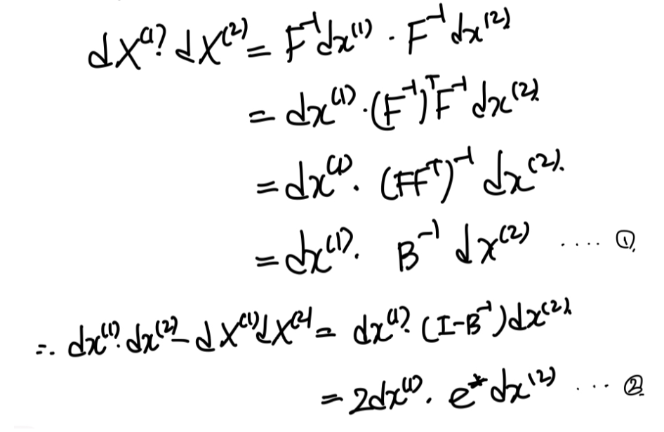
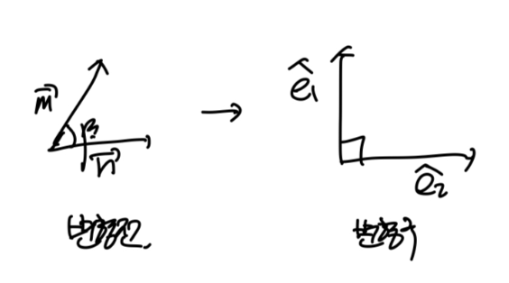
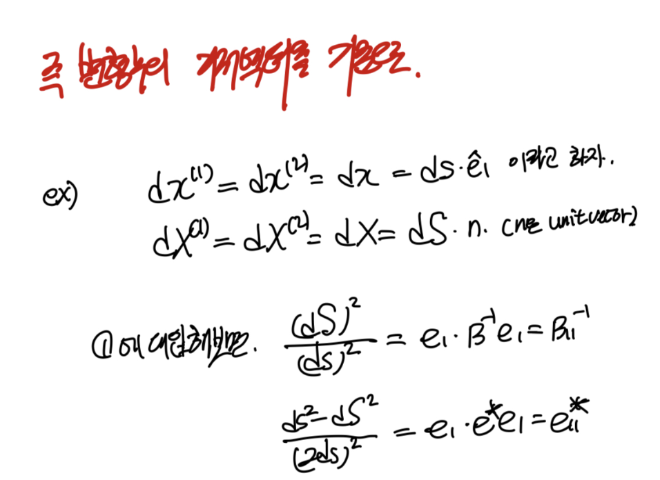
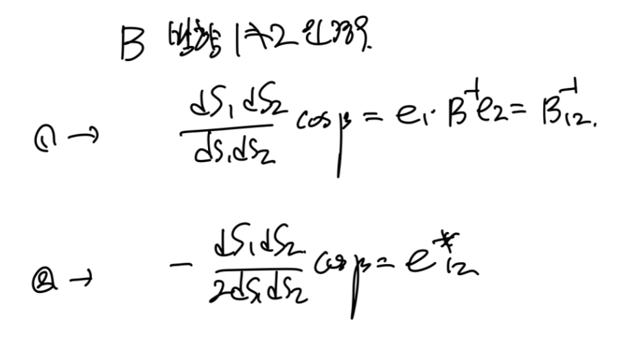
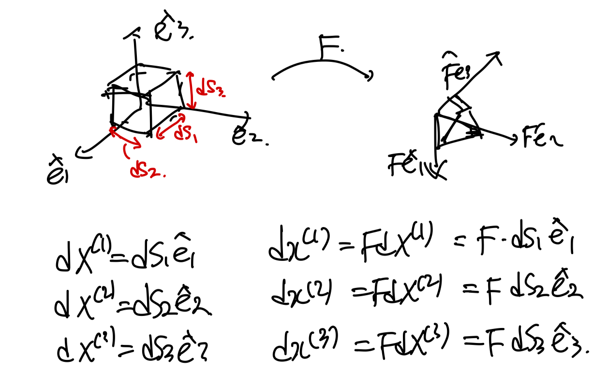
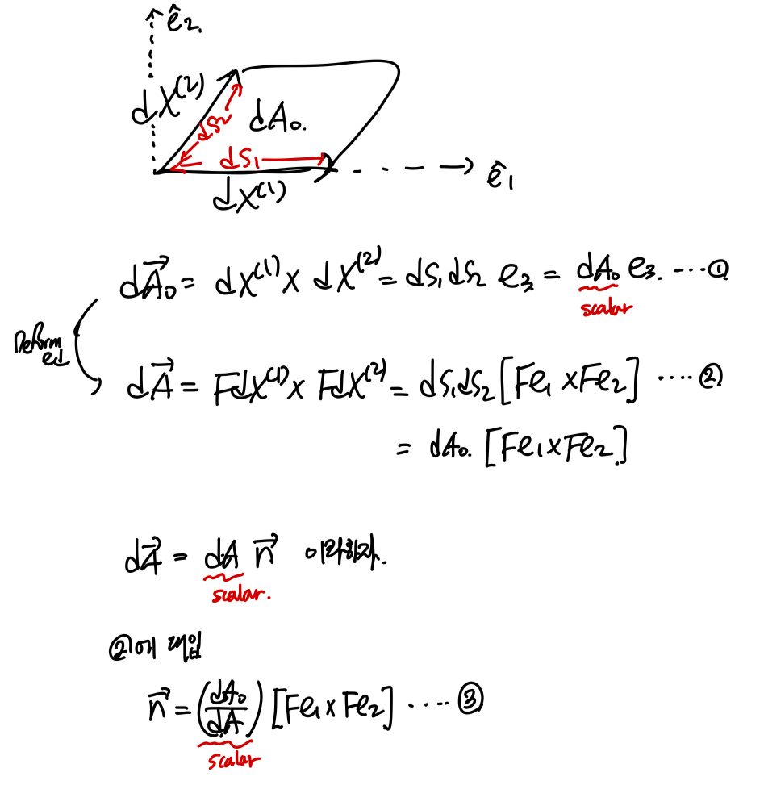
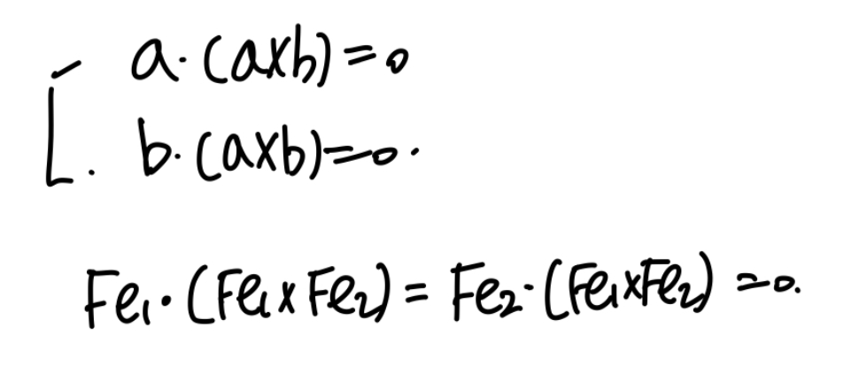

Ch1 Kinematics part4 - (B,e), Volume and Area deformation
part2,3에서 정의한
C,E*,E에 대해서 간략하게 review해보자.
Right Cauchy green deformation Tensor(C)
C = F ^T F = U^2
(F = RU = dx/dX)
Lagrangain Strain tensor(E*)
E = 1/2( C - I )
= 1/2 ( ∇u + ∇u^T + ∇u∇u^T)
Infinitesimal Strain tensor(E)
E = 1/2 ( ∇u + ∇u^T )
위 tensor들의 핵심은,
변형전을 기준
으로 하는 tensor들이라는 것이다.
F = dx(X,t) / dX
자체가 변형전의 위치벡터를 기준으로 하는 텐서이고,
이 로부터 C, E*, E가 유도되었기 때문이다.
이번에는 변형후를 기준
으로하는
Cauchy Green deformation tensor, Strain tensor를 살펴보자.
part2에서 F = RU = VR 이렇게
두가지 방식으로 분해가능하였다.

C(Right Cauchy green deformation tensor)는
F = RU로 부터 유도되었다면,
B = F F^T 는 F = VR 로 부터 유도한 tensor이다.
여기서 가장 중요한 사실은 C와 B의 eigen value,vector 관계이다.
위 BR = RC식에 n을 곱해주자.

위 과정을 통해서, B와 C의 eigen value는 같고,
B의 Eigen vector는 rotation tensor연산된,
즉 회전한 벡터임을 알 수 있다.
위사실을 사용하여, 다음과 같이.
변형전 dX
변형후 dx
의 길이벡터를 가진 연속체를 생각해보자.

(여기서, 변형전 단위벡터 = C의 eigen vector라고 가정하자)
이때, dx1,2를 서로 내적해주면,
dx = FdX 관계를 이용하여 다음과 같이 유도할 수 있다.
(part2에서 증명)

여기서 우리는 C와 B의 eigen vector관계를 사용하여,
e1(B의 고유벡터)로 n을 바꾸어 주자.

즉, B tensor의 diagonal term이 ds^2/dS^2임을 확인 할 수 있다.
(이는 C와 동일함, part2에서 확인)

part2 - C diagonal term.

이번에는 B의 off-diagonal term을
확인해보자.

이것또한, C와 동일한 모습임을 알 수 있다.
비슷하지만 다른 두 텐서.
C와 B의 차이점을 확인하고 넘어가자.

'
즉, 변형전의 벡터를 기저벡터 -> 고유벡터
(positive definite symmetric tensor이므로)
로 정의된 것이 C
변형후의 벡터를 기저벡터 -> 고유벡터
(positive definite symmetric tensor이므로)
로 정의된 것이 B
재밌는 것은, 변형 전후, 고유벡터의 변환은
회전(R)과 stretching(U)중에서
회전에 의해서만 이루어 짐을 확인하였다.
즉, stretching 동작에서는 고유벡터가 바뀌지 않는다는 것.
따라서, C와 B의 고유벡터가 R연산 차이인 것이다.
이번에는 Eulerian Starin tensor(e*)를 살펴보자.
(변형 후를 기준)

Eulerian Strain tensor의 정의
위와같이 정의한 후,
(항상 strain을 구해기 위해서는 길이벡터를 내적해준다)
이후 길이 내적 - 이전 길이 내적 을 진행하여, 길이 차이에 대한
scale을 구해준다 -Eq2.

도출된 식에서,
1,2방향이 같은경우와 다른경우로,
diagonal , off-diagonal term을 구분하여 구해준다.


변형전,후 벡터.


변형전, 후 부피변화
이번에는 변형 전, 후 부피변화에 대해서 살펴보자.
변형전,후 길이벡터들을 정의에 따라서 작성하면 다음과 같다.

이후, 처음 부피 dV_0를
나중부피 dV식에 대입해주면, 다음과 같이 도출된다.

아주 간단한 식이지만,
굉장히 추후에 많이 쓰인다.
꼭 기억해두자.
변형전, 후 면적 변화.
이번에도 변형 전후, 길이벡터들을 통해서 변형 전후,
면적변화를 살펴보자.

여기서 n_0는 변형전의 면적의 법선벡터이고,
n은 변형후의 면적의 법선벡터이다.
중요한 것은, 변형전에 e1,e2좌표공간이므로,
법선벡터 n_0 = e3임을 알 수 있다.
여기 3번식에서, 벡터의 연산을 통해서,
다음의 관계를 도출할 수 있다.$

위 관계로 4번식을 도출하고, 3번식의 n을 대입해주자.

4,5번식을 종합적으로 보면
F^Tn은 e3성분만 존재함을 알 수 있다.

따라서, 최종적으로 우리는 변형전, 후 면적벡터의 관계를 도출할 수 있다.
굉장히 중요하므로 꼭 기억해두자.